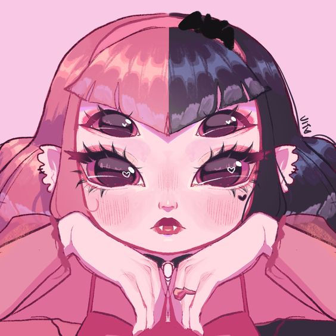
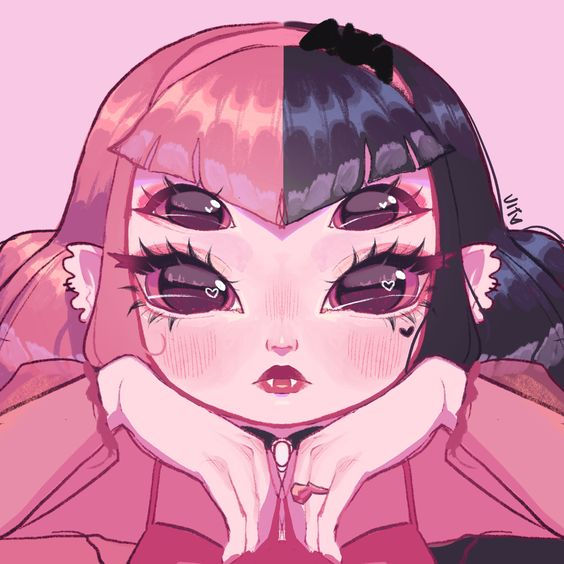
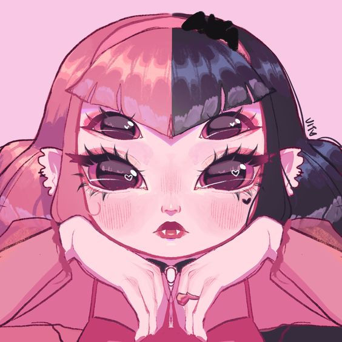
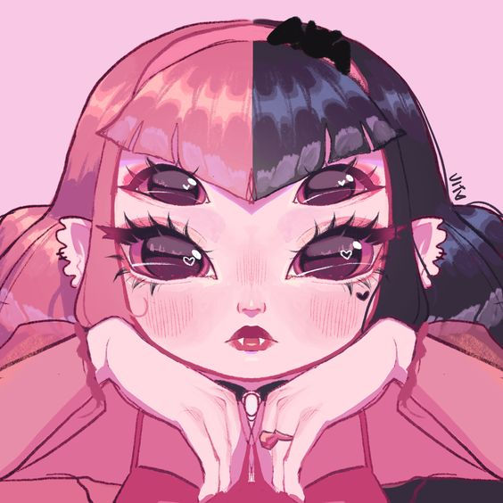

Mi artista favorita
Melanie Martinez
 



Si quieres ver más información del artista entra a su página oficial
Cry baby es el personaje creado por Melanie Martínez (o más bien es una personalidad que ella tiene) . Cuando era una niña, en la escuela le hacían bullying por sus dientes y la llamaban Cry baby (bebé llorón) por que ella era muy "frágil" por así decirlo, de ahí viene el personaje que ella creo para su álbum del mismo nombre donde nos cuenta su historia.
Comienza con la canción "Cry Baby" , donde la protagonista se enfrenta a su vulnerabilidad pero eventualmente se acepta a sí misma, desafiando las expectativas sociales. A través de canciones como "Dollhouse" y "Sippy Cup", se revela la disfunción en la familia de Cry Baby y sus propias luchas internas. En "Carousel" y "Alphabet Boy", se exploran las relaciones de Cry Baby con los demás, desde la idealización hasta el desencanto. "Soap" y "Training Wheels" profundizan en las relaciones románticas de Cry Baby, mientras que "Pity Party" muestra su lucha con la soledad y la decepción.
La narrativa toma un giro oscuro con "Tag, You're It" y "Milk and Cookies", donde Cry Baby es secuestrada por un lobo disfrazado de heladero. Finalmente, en "Mad Hatter", Cry Baby llega a aceptarse a sí misma tal como es, abrazando su locura y vulnerabilidad como parte de su identidad.